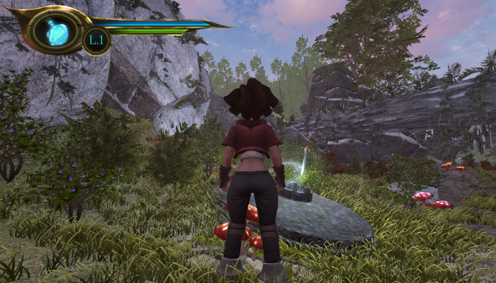

Actualmente, estoy inmersa en el desarrollo de una emocionante versión beta donde desempeño múltiples roles, incluyendo Game programmer, UI y Environment. Utilizando el potente lenguaje de programación C# y el motor de videojuegos Unity; estamos creando una experiencia envolvente basada en la mitología griega.
En este juego, los jugadores se embarcarán en una épica aventura para rescatar a la hermana del protagonista, cuya voz tiene el poder único de controlar criaturas legendarias como Sátiros, Gigantes y Minotauros. Con un enfoque ágil utilizando la metodología SCRUM, estamos trabajando arduamente para ofrecer una experiencia de juego inmersiva y emocionante que cautivará a los jugadores y los transportará a un mundo lleno de misterio y peligro.
üìà Estado: Versi√≥n 2 prevista para noviembre del 2024
⚙️ Mecánicas de Juego - Programación:
üèïÔ∏è Dise√±o de Nivel
üé® Interfaz de Usuario (UI)
üíÉ Animaci√≥n
ü§ù Autores
| Andrea Mejia | Jhon Mario Aza |
|---|---|
| Programadora [Game Programmer]
Interfáz de usuario [UI] Entorno [Level design] Animación [Personajes] |
Programador [Game Programmer]
Productor musical Entorno [Level design] |
Desarrollado por Andrea Mejia
© Copyright - 2024